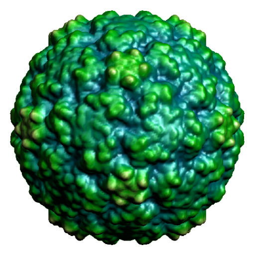
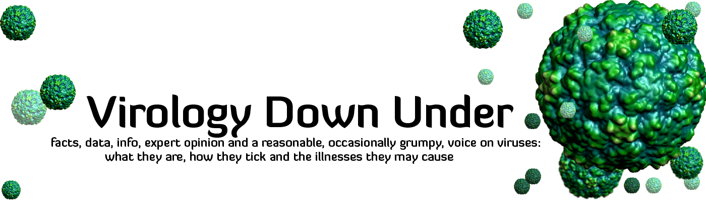
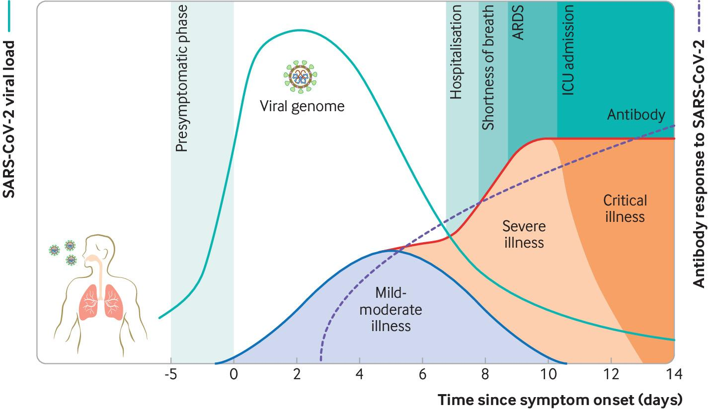

Yes, PCR tests can detect “the COVID virus”
Please release/send the gene sub sequence/s authorized to be used for detecting sarscov2.
Posted On: 2020-08-04T20:17:00
Posted By: Dhruv Sharma
Pick one https://www.ncbi.nlm.nih.gov/nuccore/?term=sars-cov-2+complete
Posted On: 2020-08-26T19:42:00
Posted By: Ian M Mackay
Under https://www.ncbi.nlm.nih.gov/nuccore/MT451283.1 I found a seqence of 29 800 nucleotids.But which part of this sequence is actually SARS-COV-2 specific, and which part is used for detection?
Posted On: 2020-10-02T00:02:00
Posted By: Renate Henschel
The whole sequence make the virus (SARS-CoV-2) distinct from any other virus (eg Measlse virus or SARS-CoV the original).It’s like saying that all of the gene sequences in all of your chromosomes make you different from all of the gene sequences in all of
my chromosomes.Now when we do PCR, we don’t; test all of the gene sequence of the virus, we choose a bit that we can see is very clearly distinct (if that’s what we’re after) from any other virus.And we know from experience (and then from further testing) that the chose sequence won’t detect any other virus.It’s also like fingerprints; they are unique to each of us.We chose a ‘fingerprint’ (a unique part of the whole) from the virus we want to specifically detect.
Posted On: 2020-10-10T11:15:00
Posted By: Ian M Mackay
Hi there!Great post, really informative!I just have a small suggestion.I’m sure you understand exactly what you’re talking about, but the description of the statistic 10^-12 seems to indicate that the odds are 10^-12 that the sequence would be matched anywhere in nature, where the actual calculation is the odds that a particular 20-length sequence will be a match.This appears to be related to the ‘prosecutor’s fallacy’.Again, really great work- really informative!
Posted On: 2020-08-04T23:56:00
Posted By: JACK OBRIEN
I am wondering whether pcr tests performed at vivid stations where people are sitting in cars may be contaminated at times?If the personnel are using same gloves for a number of hours but handling swabs, they may not only be contaminating the swabs but may be also spreading the virus as they are bringing their hands to the next persons mouth each time.Just a thought.
Posted On: 2020-08-05T01:14:00
Posted By: Luba
Not impossible.But not a big factor that describes areas with widespread transmission.
Posted On: 2020-08-26T19:43:00
Posted By: Ian M Mackay
When this whole business started, they said that PPE was supposed to be changed out with every patient.I recently was watching an instructional video for health care professionals on how to do a swab.They specifically instructed to use NON-STERILE gloves.I found this very disturbing and disgusting.If you’re going to test for this particular disease they should darn well be using sterile gloves rather than risk a false positive that would require a person to be quarantined and re-tested after 2 weeks all for nothing due to someone accidentally contaminating something.Outrageous.
Posted On: 2020-09-05T14:43:00
Posted By: 4TimesAYear
I’m pretty sure they will either be using a new set of gloves or sanitising the outer surface of the gloves between swabs.Could you link to this video?
Posted On: 2020-09-13T14:10:00
Posted By: Ian M Mackay
Total falcification of the reality; PCR tests are non-specific, they can detect traces of a corinavirus any coronavirus but cannot specify if this is ordinary flu, avian flu, Sars, Mers or Sars Cov 2.In addition it cannot tell if it is an active infection or traces from a past infection and as a result they keep classify them as asymptomatic cases.Scientific articles that could be found on the internet stipulating the limitations of the PCR test have been 'sanitized' and the limitations removed.
Posted On: 2020-08-05T06:28:00
Posted By: Shogun
Wow.You are very wrong.
Posted On: 2020-08-26T19:41:00
Posted By: Ian M Mackay
This is an open evidence review: https://www.cebm.net/covid-19/infectious-positive-pcr-test-result-covid-19/
'PCR detection of viruses is helpful so long as its accuracy can be understood: it offers the capacity to detect RNA in minute quantities, but whether that RNA represents infectious virus may not be clear.'
'The relation with infectiousness is unclear and more data are needed on this.If this is not understood, PCR results may lead to restrictions for large groups of people who do not present an infection risk.'
Posted On: 2020-08-31T22:52:00
Posted By: Rachael
No he’s not, because coronaviruses share a lot of their genetic makeup, so the sequence they look for can and most likely will exist in other coronaviruses as well.There are also viruses they don’t know about which can be mistaken for SARS-Cov2.Pile Higher and Deeper buddy.
Posted On: 2020-10-07T10:27:00
Posted By: DM
Nope.Wrong.The sequence we look for are deliberately chosen.Most PCR assays detected SARS-CoV-2 specifically.Some detect SARS-CoCV-2 and other bat CoVs but those aren’t circulating in humans (evidence from the sequencing of 10s of thousands of positive detections, which only finds SARS-CoV-2) so those tests work fine as well
Posted On: 2020-10-10T09:17:00
Posted By: Ian M Mackay
Thank you for the article.Can you explain how the nucleotide sequence was initially identified as being specific to COVID19?
Posted On: 2020-08-05T21:41:00
Posted By: Lynx
Answered somewhere altready
Posted On: 2020-08-26T19:41:00
Posted By: Ian M Mackay
I have never read such a load of drivel in all my days!
Posted On: 2020-08-06T04:11:00
Posted By: Phill
Is it just because you don’t understand it?Or what is the drivel in this?
Posted On: 2020-10-11T14:17:00
Posted By: Madsen
False negative rates in sick people (up to 30%) and false positive rates among asymptomatic up to 50% and even 80% according to Kary Mullis.As an integrative medicine practioner for the final 6 years of a 49 year pediatric career (retired March 16) and 11 years in academic medicine.I understand how to study medical literature.
Mullis did warn that PCR should never be used for diagnosis due to arbitrary boundaries determining cutoff between neg and positive, in an interview before his death.The are many publicized cases where physicians have described doing serial tests on sick CoVID 19 patients, and seeing them bounce back and forth between positive and negative.
The almost universal practice of tracking 'cases' based on PCR tests (which often counts all tests done on one patient, with the false positive problem in asymptomatic renders this data as virtually useless.And yet public health restrictions are being made largely on this flawed and misleading data.
Bose Ravenel, MD, FAAP, Retired
Posted On: 2020-08-06T07:13:00
Posted By: Samuel D. Ravenel
Thanks for the article, can you explain how the nucleotide sequence was identified as being specific to COVID19?
Posted On: 2020-08-07T02:47:00
Posted By: Lynx
Which sequence?The unique sequence of the virus that was isolated in culture, visualised by EM and then sequenced?https://twitter.com/MackayIM/status/1294597663405424640?s=20
Posted On: 2020-08-26T19:38:00
Posted By: Ian M Mackay
It is my understanding that currently there is no ‘gold standard test for the presence of SARS-CoV-2.Do you now consider the RT-PCR test to be the gold standard?
Posted On: 2020-08-09T15:20:00
Posted By: LVP
Culture is the gold standard at detecting infectious virus but is slow, insensitive, expensive and requires specialised expertise.PCR-base tests have proven themselves time and again over decades at detecting the presence of an acute infectious pathogen.
Posted On: 2020-08-26T19:38:00
Posted By: Ian M Mackay
Hello!
I saw other claims that current PCR tests are limited because we currently lack a gold standard to compare to (i.e. it would be the isolated and purified virus).
For disclosure reasons, my background is legal so I have no technical knowledge on this issue.But I do think that a minimum understanding of these basic facts are necessary since everybody is using the precautionary principle to justify the current public health policies.
Cheers,
Mauro
Posted On: 2020-08-10T03:04:00
Posted By: Mauro
https://twitter.com/MackayIM/status/1294597663405424640?s=20
Posted On: 2020-08-26T19:36:00
Posted By: Ian M Mackay
Excelent article, thanks!
Posted On: 2020-08-11T00:33:00
Posted By: Daniel Caballero
When was the SARS CoV 2 first sequenced?Which/whose sequence data set is used for the primers and probes?The test is only as good as the specificity of the primers and probes.Being that SARS CoV 2 shares much of the same genome with other coronaviruses, which portion(s) of the genome are distinctly SARS CoV 2 and when were these sequences determined?
Thanks
Posted On: 2020-08-11T11:25:00
Posted By: Chrissi
11th Jan The first sequence went online.That was the basis of many tests but these tests were also checked against subsequent genome sequence (tens of thousands now) and they still match well.Most of the genome is unique.
Posted On: 2020-08-26T19:36:00
Posted By: Ian M Mackay
Would you be so kind to give a link to the validation of this test.The virus seems to have been isolated last month.
Posted On: 2020-08-11T17:49:00
Posted By: Paul Bakers
https://twitter.com/MackayIM/status/1294597663405424640?s=20
Posted On: 2020-08-26T19:34:00
Posted By: Ian M Mackay
BS!You must have a 'golden standard test' to compare it too.You must isolate the virus.Simple as that!If you dont have isolated it, then it does not excist!
This confusion is not a matter of 'we need to improve the tests' or 'we need to understand the immune system, virus, mutations, etc., better.'This circumstance is a failure of the very concept of surrogate testing, which is what’s being used with Covid-19.You simply can’t use a surrogate test EVER for diagnosis unless you have a definitive (called 'gold standard') test to compare it to.
Thats a fact!
Posted On: 2020-08-11T21:14:00
Posted By: Razor
It has been isolated.And tested using the RT-PCRs.And so you can indeed use PCR-testing as a surrogate.
https://twitter.com/MackayIM/status/1294597663405424640?s=20
Posted On: 2020-08-26T19:33:00
Posted By: Ian M Mackay
Assuming that the nucleotides are equally distributed in the RNA is not correct.
Counting them in different published virus genomes showed that t is about 2 times more frequent than c.Also sequences cccccc, gggggg do not exist although in my trial they should be present theoretically 43 times.
So the specificity of an rt-PCR is not that easy to explain with the low theoretical probability, especially as there are many different genomes and fraction of them present in a throat swab which which could be used for the multiplication.
Also the existance of fraction of SARS-COV2 may trigger rt-PCR positive without that the presence of virulent virus can be proven by cell culture.
Still a long way to learn …
Posted On: 2020-08-12T00:25:00
Posted By: Paul Thillen
This is a guide.
Posted On: 2020-08-26T19:32:00
Posted By: Ian M Mackay
Thanks for taking the time to write this article I appreciate it.The only thing we need to know for sure is, do we (or even you) know for sure which type of PCR tests are being used at the so called ‘testing stations’ and where they were obtained and manufactured?Everything else is irrelevant, especially the statistics regarding infections and fatalities propagated in the screaming media.
Posted On: 2020-08-14T00:02:00
Posted By: bob
Yes we know these things.
Posted On: 2020-08-26T19:31:00
Posted By: Ian M Mackay
What a load of propaganda only idiots would believe this bovine feces .They CG’d the virus in the lab from a random patient that did not actually have covid, as the PCR tests for covid on 26th dec had not been developed as they had not even seen the genome ( no agents/primers unknown).Its just a research tool not a diagnostic tool.
Posted On: 2020-08-14T13:39:00
Posted By: bdbinc
Thank you Ian for explaining the general procedures of primer RT-PCR test design and the significant amount of self-checking processes that go into creating a reliable test.I hope that you spending your precious time writing this easy to understand article will help to spread more confidence in the RT-PCR test as a diagnostic tool, since we live in an age where negative (mis)information about rare malpractice spreads like wildfire and good news on a job well done is seldomly remembered.
I guess the harshest of critics can only be silenced when an in depth scientific article is published explaining how one of the actual RT-PCR tests that specifically detects key markers of SARS-CoV-2 was designed, showing them in full detail what defining part(s) of the viral RNA are targeted and what corresponding primers are used, but with patents an financial interests involved this will ofcourse never happen.So unless you have the freedom to uncover the full details there still is a certain amount of trust involved.
What do you personally think about the way the Australian government is currently translating the observed trend in test results into active measures?Does the severity of these measures match up to the actual danger present and how do these measures compare to the actual amount of hospitalizatons and fatalities?
Posted On: 2020-08-15T02:14:00
Posted By: M. Lokers
Thank you Ian for explaining the general procedures of primer RT-PCR test design and the significant amount of self-checking processes that go into creating a reliable test.I hope that you spending your precious time writing this easy to understand article will help to spread more confidence in the RT-PCR test as a diagnostic tool, since we live in an age where negative (mis)information about rare malpractice spreads like wildfire and good news on a job well done is seldomly remembered.
I guess the harshest of critics can only be silenced when an in depth scientific article is published explaining how one of the actual RT-PCR tests that specifically detects key markers of SARS-CoV-2 was designed, showing them in full detail what part(s) of the viral RNA are targeted and what corresponding primers are used, but with patents an financial interests involved this ofcourse will never happen.So unless you have the freedom to uncover the full details there still is a certain amount of trust involved.
What do you personally think about the way the Australian government is currently translating the observed trend in test results into active measures?Do the measures match up to the actual danger present and how do they relate to the actual amount of hospitalizatons and fatalities?
Posted On: 2020-08-15T02:16:00
Posted By: thijszzzz@hotmail.com
Can you link to evidence of the virus being isolated please?Thanks!
Posted On: 2020-08-15T19:50:00
Posted By: Jeff Nev
Dear Ian,
In your article you write about the reference of PCR test that 'The leading tests have also been tested on SARS-CoV-2 RNA purified from virus isolated and grown in cells in the lab – so we know it is this virus that we’re detecting.'
Do you mean nu this that there is a golden standard that is used as a reference?And if so, van you link of post the scientific paper to that?
Thanks in advance.Kind regards, Cees
Posted On: 2020-08-15T23:15:00
Posted By: Cees
Hello,
To quote you:
'The leading tests have also been tested on SARS-CoV-2 RNA purified from virus isolated and grown in cells in the lab'
Can you help me out with a link to a paper/study describing how this was done.
Can you also comment on the relevance of Rivers postulates to SARS COV 2 and if there is a paper/study describing it’s application to establish the causal link between the virus and the disease.
Thanks!
Posted On: 2020-08-16T15:30:00
Posted By: GP
Thanks so much for this article.I referenced it in my series on the Corona Conspiracy, covering virus denialism in its many modern forms: http://www.integralworld.net/visser179.html
Posted On: 2020-08-17T02:10:00
Posted By: fvisser3
If only there was a test for ignorant people
Posted On: 2020-08-21T11:41:00
Posted By: Damien
Hi.Very useful info.'But we have learned much about this virus in 7 months and SARS-CoV-2, like other viruses we detect with RT-rPCR, is present before and during the peak symptomatic period.These are also the times we get sampled and tested because we feel sick.We know from experience that when detectable viral RNA is present in a patient’s sample, there is often an infectious virus present as well.RNA is not so stable that it hangs around without a constant source producing more of it.'This is a crucial area surrounding the current ‘casedemic’ in Europe.Virtually all positive PCR tests are of asymptomatic people and the data shows they are mostly young people.For how long does the viral RNA remain detectable after the infection has passed?I have read studies where infectious and non-infectious RNA has been identified.
Posted On: 2020-08-23T21:13:00
Posted By: Danny
That’s actually wrong.Most testing is done on sick people.
Posted On: 2020-08-26T19:26:00
Posted By: Ian M Mackay
Surely that applies only early in the pandemic when most tests are done in hospital.Fast forward to october and in europe they are mainly testing asymptomatics.In australia this may be true but not in europe
Posted On: 2020-09-29T21:27:00
Posted By: Peter Webster
Can you please provide me with reliable evidence that 'in europe they are mainly testing asymptomatic'.Otherwise, I have to ignore this statement as just wrong.
Posted On: 2020-10-10T11:17:00
Posted By: Ian M Mackay
Looking at how we test here(Belgium) this feels like a false statement?When returning from travel you can test yourself regardless of symptoms at the airport(eg returning from orange, red(mandatory) zones(at a certain point this was at least +50%).In addition to that we have asymptomatic test streets throughout the country… (and as I understand it this is per WHO recommendation so will be true for most countries?).In light of that there seems enough room for reasonable doubt about the value of the current PCR test methodology?Read: can you prove beyond a doubt that the current (imho very high ) randomness is not (negatively) impacting the overall result: read at current it looks the virus is only at max 10%(looking at the more apparent results such as hospital/icu admissons and deaths against higher positive tests) of what it was in march/april(when your statement was more true).I know it’s more complex but enough to be open for debate and interpretation but that’s not what is happening(at least not in Belgium)
Posted On: 2020-10-03T18:54:00
Posted By: David L
I think you’ll find that the majority of testing is done on people with a reason to get tested – they have symptoms.However, there is undoubtedly some screening as you suggest and that’s where very specific tests like PCR or some of the rapid tests that may be less sensitive but are also less likely to throw up false positives, work well.
Posted On: 2020-10-10T09:21:00
Posted By: Ian M Mackay
In Colorado a positive test result is reported to the health department and they contact trace.If the minimum criteria of contact are met they tell you to get tested.After a friend tested positive and was sick 10 of us were contacted, 9 got tested, 2 were positive, none were symptomatic at testing nor subsequently became ill.On my county’s ‘dashboard’ they estimate 1 in 3 in my county has been tested.I’ve only known 2 people who have gotten sick so far.I do happen to interact mostly with 20-somethings.
Posted On: 2020-11-15T08:40:00
Posted By: Lauren
Did you live under a rock?This is actually wrong: today most testing is done on healthy people per WHO recommendation.(Not sure in Oz but for sure true here in the EU).And finally the test centers here are speaking up: Up to 50%(!)of the positive tests done over summer might have been false positives due to old infections(during the summer they had to rake up to 35 cycles to get a result whilst in march/april just above 30 was enough).From a more (medically uneducated but nevertheless educated) objective standpoint, 'manipulating' the cycle time to get a 'positive' result reeks(scratch that: holds un unbearable stank)… This is not mentioned by our local health organizations nor msm: They are still operating 'under the assumption(whilst we know they know: the notion that PCR tests are fallable in large healthy populations have been around since the 'beginning')' the numbers are true and as such keep fuelling the angst/fear culture…
Posted On: 2020-10-05T15:52:00
Posted By: David Laeremans
No.That’s just wrong.
Posted On: 2020-10-10T09:18:00
Posted By: Ian M Mackay
You do realize that kids in certain Colleges in USA are getting mandatory weekly tests, sick or not..?????If they want to stay on campus.
There are quite a few other scenarios for mandatory testing of All people, not just the sick I could mention, but I’ll wait for your reply regarding this One scenario.
Posted On: 2020-10-30T23:47:00
Posted By: Michael
Not the majority of testing (unless you have a study as evidence that it is in which case I’ll happily cite it and amend?).
Some of this is happening in some places, yes.
Posted On: 2020-11-09T12:30:00
Posted By: Ian M Mackay
How are you sure that the 'small part of the genome' that the test is looking for belongs exclusively to this virus and does not come from something else ?As far as i know humans and monkeys share 96% of their genome, so chances are that a small part of this virus genome might be shared with something else.
Posted On: 2020-08-25T02:00:00
Posted By: pan
By specifically checking that it does.There is a public sequence database (https://blast.ncbi.nlm.nih.gov/) that is accessed using its online tool called BLAST.We can interrogate all the sequences on it, from all the animals and viruses and sequenced so far.Plus we test the primers as discussed in the blog.
Posted On: 2020-08-26T19:25:00
Posted By: Ian M Mackay
Professor Mackay, thank you for the detailed explanations.Just to be absolutely clear, the better SARS-CoV-2 tests used in Australia do not detect other coronaviruses (with the exception of SARS-CoV-1 or a similar related virus).Do you have a view why children seem to be immune to this disease?Would you agree with Prof Beda Stadler (Sweden) view that kids has been exposed to so many forms of coronaviruses, that they have developed partial immunity to some of the surface proteins that may be common to both past coronaviruses and SARS-CoV-2?Thanks, Chris
Posted On: 2020-08-28T12:01:00
Posted By: Chris Hart
Kids are not immune, do get infected and shed the virus and are involved in transmission to adults.The risk of illness increases with the child’s age; it is extraordinarily low at the young end of the spectrum.Transmission from young children is rare.This may be related to recent past exposures to one or more of the human CoVs (229E, OC43, NL64 or HKU1) but we’ll need some evidence before we all run off and believe it to be so.
Posted On: 2020-10-14T13:55:00
Posted By: Ian M Mackay
I’m worried by this article.'We’re pretty sure' this means hypothesis.PCR is very specific yes, but detects a snipped of the hyped genome.40 PCR cycles are the gate opener for nonspecific amplification.The PCR results, (a) do not provide evidence of the virus, (b) do not provide evidence for a active infection, (c) do not explain the 'wonder' of asymptomatic people.I’ve seen some comments here not answered, please provide reference of isolation and culture of the virus, then please provide reference of an active infection from one object to another and then finally provide reference for a correlation of disease progression and virus quantification.Thanks
Posted On: 2020-08-31T15:40:00
Posted By: Ralf
There is a list of articles in this twitter thread…https://twitter.com/MackayIM/status/1294597663405424640?s=20
Posted On: 2020-09-22T18:50:00
Posted By: Ian M Mackay
Nothing in the articles about the fact this sequence can exist in other viruses, especially on other coronaviruses.
Posted On: 2020-10-07T10:55:00
Posted By: DM
This exact sequence is unique to SARS-CoV-2.That’s why PCR is so specific for the target it’s designed for and not for other related viruses.
Posted On: 2020-10-10T09:12:00
Posted By: Ian M Mackay
Hi Very good paper and as this comment states the sequence is unique to SARS- CoV- 2 but can you please explain how it is unique from other coronviruses and how the test determines this?
Posted On: 2020-10-21T16:56:00
Posted By: Richard
The genetic *sequence* of the primers is different to the sequence of other human CoVs
Posted On: 2020-12-27T22:30:00
Posted By: Ian M Mackay
What is the earliest day since exposure that we could expect detection with a PCR test?
Posted On: 2020-09-01T23:24:00
Posted By: Tom Wu
A couple of days prior to symptoms
Posted On: 2020-09-22T18:21:00
Posted By: Ian M Mackay
Hi Ian do you know what the Ct for the Australian RT PCR tests?I can’t seem to find anything on it
Posted On: 2020-09-06T15:55:00
Posted By: Craig E
Hi Craig, there is no one single Ct.The PCR is cycled 30-50 times (varies) and the result (which could be anything from 10-40something cycles) is then carefully interpreted in suitable
context , and the diagnosis made by a medical doctor using all this info, then passed onto the patient.The media seem to be running with this idea that a lab has the only say in this process.It’s generally a bit more complex and well through than that
Posted On: 2020-09-13T14:09:00
Posted By: Ian M Mackay
Curious what you think about the recent NYTimes article on cycling (40 is way to high).
Posted On: 2020-09-11T05:41:00
Posted By: David Shafer
It’s only 'way too high' if the result is taken completely without clinical context and if it is used to assign infectiousness.Hopefully neither are common events.
Posted On: 2020-10-14T13:56:00
Posted By: Ian M Mackay
Interesting article and comments until…your refeence of the isolation of the virus refers to a twitter feed.I think what we are looking for is a direct reference to a peer reviewed piece of research document that shows the isolation of this virus
Posted On: 2020-09-12T01:17:00
Posted By: Paul R
Where does it do that?
Posted On: 2020-09-13T14:00:00
Posted By: Ian M Mackay
Two problems
a.) we talk always about known Viruses, but the most of them are unknown.So the primer is only specific against known Viruses.
but that’s not the main problem.
b.) infected or ill?The PCR Test only detect the possibilty presence of a Virus.But there are always and everday a lot of Viruses present in our body.Our immune defence is always fighting against them.And that’s the point here.Since the most people are not ill and many show no sympthoms, it seems that the virus try to infected the first cells, but never had a chance to spawn.
There are a couple of studies which see a possible big T-Cell answer ( e.g. https://www.researchsquare.com/article/rs-35331/v1%20 ) and in this case the PCR Test is also positive, but it’s doubful if there is a real infection (it depends wich definition you count.)neither a transmission, because the virus is not augmentable anymore.
Also this T-Cell response may responsible for the big difference between the dead cases in the regions.For example compare, Peru and Singapore – the later had a big Sars outbreak in the past and a possible cross immunity https://biospectrumasia.com/news/26/16310/singapore-scientists-uncover-sars-cov-2-specific-t-cell-immunity.html
So, the question still remains, did the PCR Test really test an infection?
Posted On: 2020-09-12T19:39:00
Posted By: mutant77
a.) The primers are indeed specific to what they are intended to detect.That’s how they’re designed.In this case, SARS-CoV-2.b.)The PCR test detected an infection.Yes.The virus may be at such low levels once finally tested that the [person is not a transmission risk *now* – but they were at some point.So then you can track their close contacts and ask them to quarantine for up to 2 weeks to make sure they don’t become ill and carry on the spread.If testing takes too long, this won’t be useful of course.
Posted On: 2020-09-13T13:57:00
Posted By: Ian M Mackay
A) the article explain it very well, you compare a sequence with a couple of known viruses and if you find one wich is only present than you say it is enough specific.But you only know 10% maybe 15% or even much less viruses DNA/RNA.So the claimed specific is only specific for known viruses.
B) that’s the question.What you say is what you guess.Is there any study which looks if there was any Transmission from a 'asymtompic' PCR positive?For my understanding of the immun reaction it shouldn’t.You say they track the contacts so there should be a Lot knownledge of this.
Posted On: 2020-09-29T15:40:00
Posted By: Mutant77
There are many such reports that have made the link.See this from a reliable resource https://www.ecdc.europa.eu/en/covid-19/latest-evidence/transmission.Also this new review is great https://journals.plos.org/plosmedicine/article?id=10.1371/journal.pmed.1003346 'In seven studies of defined populations screened for SARS-CoV-2 and then followed, 31% (95% CI 26%–37%, prediction interval 24%–38%) remained asymptomatic.'
Posted On: 2020-10-10T11:20:00
Posted By: Ian M Mackay
And how do you tell whether the person had the virus a month or a day ago?You’ll be testing positive even after the quarantine and no symptoms.Very hard to draw any absolutes in here.
Posted On: 2020-10-07T10:35:00
Posted By: DM
Yes, this is true.This is why contact tracing and collaboration between the lab and public health and treating doctors is essential to understand any positive result.Countries where this works well, and where contact tracing is even possible, have shown this to be the case.For example New Zealand, Australia, Taiwan, China, Japan, South Korea and more
Posted On: 2020-10-10T09:15:00
Posted By: Ian M Mackay
Oh and you forgot to answer about his first question, which I’ve also raised, that there are huge number of viruses lesser known or not known at all which will quite likely share the same sequence which it’s tested for.You can’t say it’s testing for SARS-cov2 specifically if you don’t even know what all coronaviruses (or others) have the same exact sequence.
Posted On: 2020-10-07T10:40:00
Posted By: DM
This is true.But so far, of those that have been fully sequenced – and there have been a record number of viral genomes analysed – they’ve
all been SARS-CoV-2 and not a different virus.
Posted On: 2020-10-10T09:13:00
Posted By: Ian M Mackay
The problem with the test isn’t if it can detect the virus, it is whether the virus they’re detecting is at an infectious level.The virus is almost always NOT infectious above 30 cycles of the test, yet 37-40 cycles is being used to detect positive cases.That leads us to believe at least 63% of positive tests shouldn’t be.
Posted On: 2020-09-12T21:25:00
Posted By: Ron
To be clear, the virus detected below 30 cycles isn’t always able to be cultured using cell culture nor is that detected above 30 cycles never able to be cultured.Reasons may include the specimen being from the wrong anatomical area, specimen sat around too long, it wasn’t kept at the right temperature, it wasn’t protected by the addition of buffered with culture medium, the people trying to grow virus are not suitable expert, it was frozen and thawed a few times first, and so on.Culture failing to 'grow' virus doesn’t mean there is not infectious virus there – its a bit more complex than that.
Posted On: 2020-09-13T13:54:00
Posted By: Ian M Mackay
Look, they want as many positive cases as possible, so keeping the cycles high is the way to go.There is the argument though that with only 33 cycles it would quite likely miss detecting the virus, so more false negatives.What’s so useless about these tests is the answer is either positive or negative, rather than giving any numbers as estimates how many viruses there are, cos that would tell more of the infection and whether the person is significantly gonna spread it.At the moment the test is pretty useless.
Posted On: 2020-10-07T10:32:00
Posted By: DM
I was surprised when you said that some types of PCR tests are able to be completed in an hour or less.Additionally, it’s important for the patients who have been tested to be notified of the results as soon as possible.Even if a telegram is necessary, they need to know so they can take immediate action and contain the spread of the virus as much as possible.
Posted On: 2020-09-26T02:49:00
Posted By: Rebecca Gardner says:
What a bunch of quackery.Either this guy is a terrible use for a shill or he’s drinking the kool aid
Posted On: 2020-09-27T11:50:00
Posted By: WakeUp
OMG – a supposedly scientific text starts by debunking a person!!!This is a new low for scientism (a faith religion masquerading as science).Kary Mullis knew his own test/method and its limitations and parameters – mass testing using pcr is frowned on by true scientific people.Take note, this is a policy hack article, defending faith based methods.
Posted On: 2020-10-07T11:03:00
Posted By: Harry
As a true scientist who doesn’t set policy, this comment is not evidence-based.Mullis and his comments were way off the mark and have been taken and run with by those with no understanding of the technique or the science.A 'true scientific person'?Come on.I reckon someone with decades of experience using and designing and troubleshooting PCRs to detect viruses is a pretty true scientific person.
Posted On: 2020-10-10T09:28:00
Posted By: Ian M Mackay
What do you mean by 'cycles'?I am a layperson and dont know what cycles mean in connection with the test.
Posted On: 2020-10-08T20:20:00
Posted By: Renate Henschel
PCR cycles are defined in this older blog of mine.I really need to update it but the principle should be clear enough https://virologydownunder.blogspot.com/2015/05/the-mechanics-of-polymerase-chain.html
Posted On: 2020-10-10T08:55:00
Posted By: Ian M Mackay
Where was this virus isolation properly achieved for a pure virus and reinfected into animals to see its effect and has this virus got a sequence?
Posted On: 2020-10-10T03:50:00
Posted By: LARRY
Can you define 'properly achieved' for me please?In the examples I’ve given, it
was properly achieved so I’d like to make sure we’re on the same page.
Posted On: 2020-10-10T08:53:00
Posted By: Ian M Mackay
So this seems to confirm that the PCR test can’t detect a live 'hot' infection.i.e. that a positive result confirms the person has case Covid19 and is actually infectious.
Posted On: 2020-10-12T20:45:00
Posted By: George C
PCR-based test can OF COURSE detect active infections.No idea how you came to your conclusion.
Posted On: 2020-10-16T07:39:00
Posted By: Ian M Mackay
I’m impressed with your patience Ian.Great that you willing to answer people’s questions.
So there’s a discussion going on in my country.About the PCR tests that are being used.What experts are saying is that there is no standardized protocol and 2 of the 3 targets of the test have been dropped, so there is now one but of RNA that is being matched instead of 3.
Basically they are saying that the PCR in itself test is reliable, but there are so many shortcuts being taken for corona tests that the results are questionable.
There is a article on linkedin detailing the arguments.Is google translated.Its a responses by a molecular geneticist to remarks made by an expert from our national health authority.
I wonder if you would comment on it
https://translate.google.com/translate?hl==nl=en=https%3A%2F%2Fwww.linkedin.com%2Fpulse%2Ffalend-pcr-testbeleid-brandhaard-zelf-gecre%25C3%25ABerd-ortiz-martinez%2F
Posted On: 2020-10-14T05:19:00
Posted By: Rudi
Coronavirus has been here since 1930´s there is no evidence, proper one, about how many are there, whats the difference between them, which symptoms they cause, how many corona difference they have, etc…
Posted On: 2020-10-15T10:20:00
Posted By: hugo
Do you ever stop to consider that maybe you have no idea about this field of study whatsoever?It might be better to go away and read more about the history of virology and viruses, or ask some experts, before making silly statements like this.
Posted On: 2020-10-16T07:35:00
Posted By: Ian M Mackay
Facts on the PCR test Is the PCR test accurate in indicating the presence of Sarscov2 RNA?- YES Yes ( but 2/3% false positive is generally acceptable) yes (if the company who developed the test is reliable and in development of the test cultured the virus as a reference test)
Does the test indicate the presence or absence of infectious Sarscov2?NO
Positive test of a sick person, in conjunction with clinical observation of covid like symptoms, is likely indicating, but not proving, infectious Sarscov2 virus but the person could be sick from a different virus.
As we come into the flu season with possibly similar clinical symptoms to Sarscov2 showing up we need also to PCR test for the flu virus.Otherwise we won’t know what virus is making people sick.
Positive test of an asymptomatic person only tells you the person had the virus at one time but gives no indication of the presence of infective virus or their transmitting risk now so gives no useful information and should not be used to restrict that persons activities.
Evidence for or against the above statements of facts welcomed.
Posted On: 2020-10-16T02:28:00
Posted By: John
'Does the test indicate the presence or absence of infectious Sarscov2?NO' – that’s a bit disingenuous.Yes, PCR-based testing absolutely does detect an infectious virus.It will
also detect fragments of non-infectious viral RNA.What hasn’t been well shown, is what is generating these pieces of RNA for weeks?Do we see this with other respiratory viruses?How much of what we detect is truly viable virus that is missed because culture methods can be very insensitive?
The assumption (picked up by PCR denialists) is that it’s all non-infectious virus/RNA 'fragments'.But that hasn’t been proven.It is much easier to propose a
theory which pulls down current dogma than do the work that supports the new theory.Which is where we’re at right now.
Posted On: 2020-10-16T07:33:00
Posted By: Ian M Mackay
theory or not .. the observation that most of the actual positive PCR results are derived from patients that show no or weak symptoms or pneumonia is a strong indication that these test results are due to previous infections.The actual situation in mid Europe is completely different than it was in spring.
Posted On: 2020-10-19T17:36:00
Posted By: Urs
~20% of cases are asymptomatic.Around 60% are mild or moderate or in some way do not need hospitalisation.The remain 20% are more severe.
Posted On: 2020-10-27T07:40:00
Posted By: Ian M Mackay
Can you cite any references that support these figures, they seem orders of magnitude out?
Posted On: 2020-11-08T15:52:00
Posted By: Chris
Thanks for a great and informative (and very clear) article about how the PCR-test can detect the SARS-Cov-2 virus.I use it to de-bunk Corona-critics / Corona-deniers here in Holland.(Not that the die-hards can be convinced with clear, scientific facts, alas).I have a technical question, hope you can help me out: The PCR tests for SARS-CoV-2 in the Netherlands originally focused on two targets: the E gene and the RdRP gene (Corman 2020).With the experience gained with this, most laboratories have chosen to test only for the most sensitive E gene, also because of the scarcity of materials.In the meantime, the RdRP gene PCR SARS-CoV-2 has been made specific and comparable to the sensitivity of the E gene PCR by various laboratories.Now, I don´t work with the PCR-test so this doesn´t mean much to me.The key question is: does testing only for the most sensitive E gene, make the PCR-test more or less reliable in detecting SARS-Cov-2?Or doesn´t it make any difference because the E-gene is specific to SARS-Cov-2?Any influence on the Ct cycles needed to get a positive or negative result?
Posted On: 2020-10-18T22:57:00
Posted By: Dieles Stolk
I recommend the use of a second target, however, as you note, there have been worldwide shortages of reagents to fuel the PCR machine, as well as huge demand for testing, so compromises have to be made to find as many cases as possible and prevent spread.Using one reliable and sensitive test is a good way to go.Using Corman’s E doesn’t make it more or less reliable; just reliable.The E also detects some closely related bat cronaviruses – but they don’t exist in humans so not an issue.Ct cycles should be considered along with the patient’s status – all part of the collaboration between lab and patient’s doctor and public health expertise.
Posted On: 2020-10-27T08:48:00
Posted By: Ian M Mackay
And the big question, When does pcr detects the infection, it i have the virus but i have not developed yet the infection, does the pcf detect the virus???
Posted On: 2020-10-21T22:20:00
Posted By: Antonio
Yes.Have a look at this image from a recent review.It shows the virus levels (=viral genome) are high and detectable
before illness begins
Posted On: 2020-10-27T07:38:00
Posted By: Ian M Mackay
Analytical Performance: Limit of Detection (LoD):
LoD studies determine the lowest detectable concentration of 2019-nCoV at which approximately 95% of all (true positive) replicates test positive.The LoD was determined by limiting dilution studies using characterized samples.
The analytical sensitivity of the rRT-PCR assays contained in the CDC 2019 Novel Coronavirus (2019- nCoV) Real-Time RT-PCR Diagnostic Panel were determined in Limit of Detection studies.Since no quantified virus isolates of the 2019-nCoV are currently available, assays designed for detection of the 2019-nCoV RNA were tested with characterized stocks of in vitro transcribed full length RNA (N gene; GenBank accession: MN908947.2) of known titer (RNA copies/µL) spiked into a diluent consisting of a suspension of human A549 cells and viral transport medium (VTM) to mimic clinical specimen.Samples were extracted using the QIAGEN EZ1 Advanced XL instrument and EZ1 DSP Virus Kit (Cat# 62724) and manually with the QIAGEN DSP Viral RNA Mini Kit (Cat# 61904).Real-Time RT-PCR assays were performed using the ThemoFisher Scientific TaqPath™ 1-Step RT-qPCR Master Mix, CG (Cat# A15299) on the Applied Biosystems™ 7500 Fast Dx Real-Time PCR Instrument according to the CDC 2019-nCoV RealTime RT-PCR Diagnostic Panel instructions for use.
From Page 39 https://www.fda.gov/media/134922/download
Posted On: 2020-11-05T10:02:00
Posted By: steve bailen
Greetings and thank you for your time and effort to answer all those questions!I would like to know what information the immune system needs in order to create antibodies for a certain virus?Does it get it from the proteins of the membrane, or the RNA of the virus.Is it possible for the immune system to start creating antibodies, just from fragments of a virus (not a whole 'functioning' one) that somehow have gotten into our body?Thank you!
Posted On: 2020-11-13T08:07:00
Posted By: Stass
Proteins – specifically parts (or frgaments) of them called anitigens.RNA can also be detected in a less specific way via the innate immune response.
Posted On: 2020-11-22T19:59:00
Posted By: Ian M Mackay
Thanks for your thoughts here.We understand that the higher the cycles set on the PCR test, the more positive results we will get.For example if the cycles are at 60, it will almost always provide a positive result even on a healthy person.It would be fair to run the cycles at 20 for more accurate results.Why is it that the cycles are not standardized at the Testing centers?
Posted On: 2020-11-17T16:31:00
Posted By: Mirza
I am not Dr. McKay but I do Use PCR and RtPCR in research and The primers used are specific to detect and amplify specific DNA.You are not going to get a positive result no matter how many cycles you set the machine up if there isn’t base material present there in the first place.I’m surprised he had the patience to last this long.The amount of disinformation you guys are willfully absorbing and spewing out, amplified like a virus, is alarming and a sickness in and of itself.You haven’t disproven or cured cancer or ED, have you?
Posted On: 2021-02-22T01:08:00
Posted By: Random



Content Date: 2020-08-04
Download Date: 2021-04-21
Document ID: L0C04AOV2